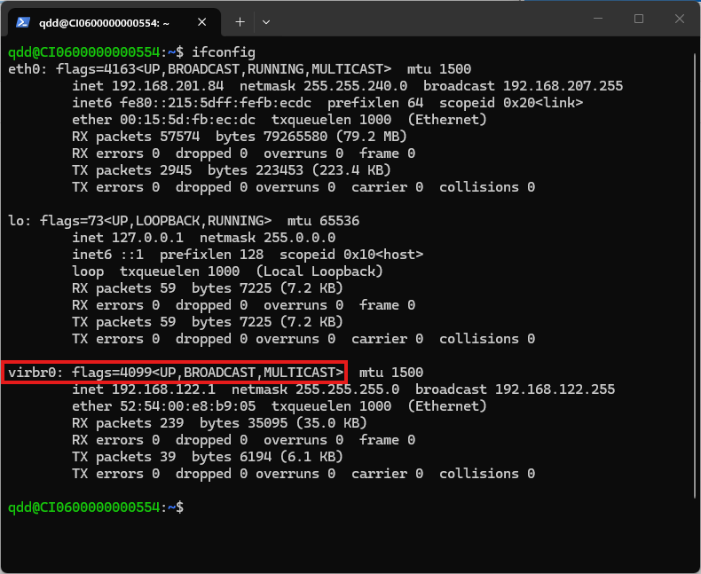
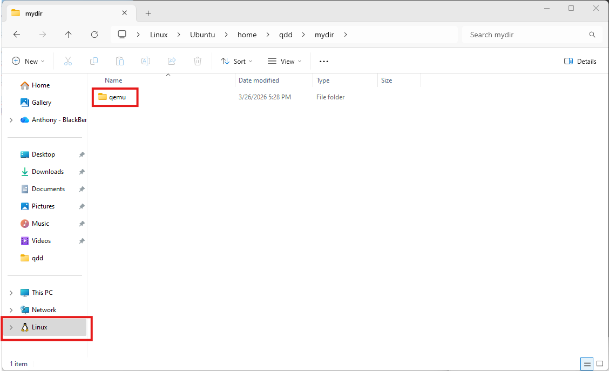
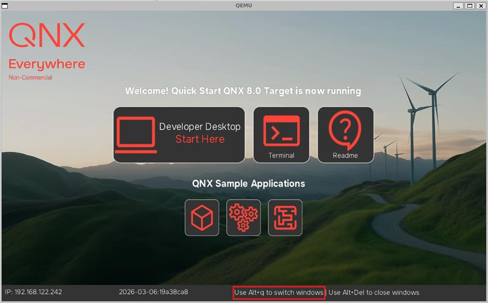

This codelab is meant to be a step by step tutorial to help you get started with the QSTI in a virtualized environment on a Windows device. QEMU is typically used to run QSTI within the context of an Ubuntu system. Detailed documentation for using QSTI on QEMU on Ubuntu can be found here. In this tutorial, we will use WSL which allows for Linux programs to run on Windows systems with minimal setup required. Therefore, the aforementioned documentation is mostly applicable and will be referenced in this tutorial.
wsl --install
wsl from PowerShell or the Windows Command Prompt.sudo apt update && sudo apt upgrade
sudo apt install qemu-system qemu-system-x86 qemu-kvm libvirt-daemon-system libvirt-clients bridge-utils qemu-kvm virt-manager
sudo systemctl enable --now libvirtd
sudo virsh net-start default
sudo virsh net-autostart default
sudo mkdir -p /etc/qemu
echo "allow virbr0" | sudo tee /etc/qemu/bridge.conf
sudo chmod 640 /etc/qemu/bridge.conf
sudo chown root:kvm /etc/qemu/bridge.conf


-smp 4 and -m 8G to specify 4 cores and 8 GB of RAM assigned to QEMU. With a more powerful system, you could increase that to 8 cores and 16 GB of RAM.-device virtio-vga-gl.,show-cursor=on.wsl) and navigate with cd to the "qemu" directory you added to the WSL filesystem.sudo qemu-system-x86_64 \
--enable-kvm \
-drive file=output/disk-qemu.vmdk,if=ide,id=drv0 \
-netdev bridge,br=virbr0,id=net0 \
-device virtio-net-pci,netdev=net0,mac=52:54:00:91:01:ea \
-pidfile output/qemu.pid \
-nographic \
-kernel output/ifs.bin \
-serial mon:stdio \
-object rng-random,filename=/dev/urandom,id=rng0 \
-device virtio-rng-pci,rng=rng0 \
-vga none \
-display sdl,gl=on,show-cursor=on \
-smp 4 \
-m 8G \
--cpu host,host-phys-bits-limit=40 \
-device virtio-vga-gl
sudo qemu-system-x86_64 \
--enable-kvm \
-drive file=output/disk-qemu.vmdk,if=ide,id=drv0 \
-netdev bridge,br=virbr0,id=net0 \
-device virtio-net-pci,netdev=net0,mac=52:54:00:91:01:ea \
-pidfile output/qemu.pid \
-nographic \
-kernel output/ifs.bin \
-serial mon:stdio \
-object rng-random,filename=/dev/urandom,id=rng0 \
-device virtio-rng-pci,rng=rng0 \
-vga none \
-display sdl,gl=on,show-cursor=on \
-smp 4 \
-m 8G \
--cpu host,host-phys-bits-limit=39 \
-device virtio-vga-gl
By default, Alt+Tab is used to switch between windows on the QSTI, but this does not work well with Windows 11 since that hotkey is already in use by the operating system.
use fullscreen-winmgr.sed -i '2i export WINMGR_HOTKEY=q\
export WINMGR_KEYMOD=Alt' /system/etc/startup/full_startup.sh && sync
